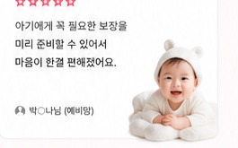
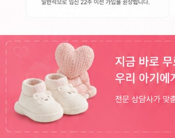

선천이상 대비
출생 전후 확인될 수 있는 위험을 대비합니다.
사랑하는 우리 아이를 위한 현명한 선택
필요한 보장은 든든하게, 가입 전 확인할 내용은 쉽게.
태아보험 정보를 한눈에 살펴보고 상담까지 간편하게 신청하세요.
출생 전후에 발생할 수 있는 여러 위험에 대비하고, 아이의 성장 과정까지 고려한 보장을 준비하기 위해 태아보험을 살펴보는 분들이 많습니다.
출생 전후 확인될 수 있는 위험을 대비합니다.
신생아 시기 질병과 입원 위험을 확인합니다.
아이 성장 과정에서 필요한 보장을 살펴봅니다.
예기치 못한 의료비 부담에 대비합니다.
관련 진단과 수술비 보장 여부를 확인합니다.
신생아 시기 입원과 수술 보장 범위를 살펴봅니다.
질병과 상해로 인한 입원 보장 여부를 확인합니다.
성장 과정에서 발생할 수 있는 사고에 대비합니다.
어린이 성장기 주요 질병 보장을 살펴봅니다.
※ 보장 여부와 범위는 상품, 보험사, 가입 조건에 따라 달라질 수 있습니다.
★★★★★처음 준비해서 막막했는데 필요한 내용부터 차근차근 설명을 들어 비교 기준을 잡는 데 도움이 됐어요.
김○영님 · 예비맘
★★★★★여러 내용을 혼자 찾아보기 어려웠는데 핵심 보장과 가입 시기를 정리해서 안내받아 편했습니다.
이○진님 · 예비맘
★★★★★아이에게 꼭 필요한 부분을 중심으로 설명을 들어 불필요한 걱정을 줄일 수 있었어요.
박○나님 · 예비맘
※ 위 후기는 이해를 돕기 위한 예시 문구이며, 실제 상담 결과는 개인별로 다를 수 있습니다.
임신 주수에 따라 가입 가능 범위가 달라질 수 있습니다.
필요한 보장과 제외 항목을 꼼꼼히 확인하세요.
예산과 납입기간을 함께 고려해 비교하세요.
보장이 제한되는 기간이 있는지 확인하세요.
가족 상황에 맞는 구성인지 상담을 통해 점검하세요.
보험사별 심사 기준과 임신 주수에 따라 가입 가능 범위가 달라질 수 있어 미리 확인하는 것이 좋습니다.
태아보험은 일반적으로 어린이보험에 태아 관련 특약을 더해 임신 중 가입하는 형태를 말합니다.
가족의 예산과 필요한 보장기간을 고려해 만기와 납입기간을 비교하는 것이 좋습니다.
출생 전후 보장, 신생아 질병, 입원·수술, 성장기 질병 등 필요한 항목을 우선 점검하세요.
상품 구성, 가입 조건, 보장기간, 특약 선택 등에 따라 달라질 수 있습니다.
신청 내용을 바탕으로 상담 연결이 진행되며, 가입 여부는 상담 후 직접 결정할 수 있습니다.

상담을 통해 필요한 내용을 확인하고 가입 여부는 충분히 검토한 뒤 결정하세요.